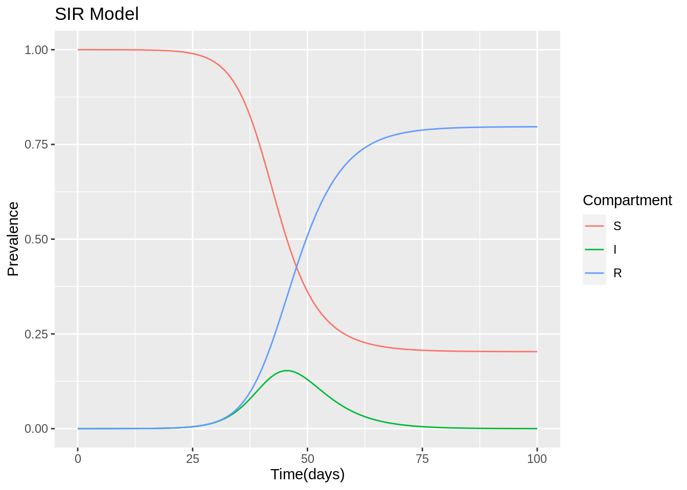

6.6 Case Study: SIR model function
This is an interesting example taken from a course on Coursera: Infectious disease modelling-ICL
The purpose of this example is to show how to make a model passing through making a function.
First we need to load some useful libraries:
library(deSolve)
library(reshape2)Then set the model inputs:
- population size (N)
- number of susceptable (S)
- infected (I)
- recovered (R)
And add the model parameters:
- infection rate (\(\beta\))
- recovery rate (\(\gamma\))
N<- 100000 # population
state_values<- c(S = N -1, # susceptible
I = 1, # infected
R = 0) # recovered
parameters<- c(beta = 1/2, # infection rate days^-1
gamma = 1/4) # recovery rate days^-1Then we set the time as an important factor, which defines the length of time we are looking at this model run. It is intended as the time range in which the infections spread out, let’s say that we are aiming to investigate an infection period of 100 days.
times<- seq(0, 100, by = 1)Finally, we set up the SIR model, the susceptable, infected and recovered model. How do we do that is passing the paramenters through a function of the time, and state.
Within the model function we calculate one more paramenter, the force of infection: \(\lambda\)
sir_model<- function(time, state, parameters){
with(as.list(c(state, parameters)),{
N<- S + I + R
lambda = beta * I/N # force of infection
dS<- - lambda * S
dI<- lambda * S - gamma * I
dR<- gamma * I
return(list(c(dS,dI,dR)))
})
}Once we have our SIR model function ready, we can calculate the output of the model, with the help of the function ode() from {deSolve} package.
output<- as.data.frame(ode(y = state_values,
times = times,
func = sir_model,
parms = parameters))
output %>% head
#> time S I R
#> 1 0 99999.00 1.000000 0.0000000
#> 2 1 99998.43 1.284018 0.2840252
#> 3 2 99997.70 1.648696 0.6487171
#> 4 3 99996.77 2.116939 1.1169863
#> 5 4 99995.56 2.718152 1.7182450
#> 6 5 99994.02 3.490086 2.4902600In addition to our builtin SIR model function we can have a look at:
?deSolve::ode()It solves Ordinary Differential Equations.
deSolve:::ode
#> function (y, times, func, parms, method = c("lsoda", "lsode",
#> "lsodes", "lsodar", "vode", "daspk", "euler", "rk4", "ode23",
#> "ode45", "radau", "bdf", "bdf_d", "adams", "impAdams", "impAdams_d",
#> "iteration"), ...)
#> {
#> if (is.null(method))
#> method <- "lsoda"
#> if (is.list(method)) {
#> if (!inherits(method, "rkMethod"))
#> stop("'method' should be given as string or as a list of class 'rkMethod'")
#> out <- rk(y, times, func, parms, method = method, ...)
#> }
#> else if (is.function(method))
#> out <- method(y, times, func, parms, ...)
#> else if (is.complex(y))
#> out <- switch(match.arg(method), vode = zvode(y, times,
#> func, parms, ...), bdf = zvode(y, times, func, parms,
#> mf = 22, ...), bdf_d = zvode(y, times, func, parms,
#> mf = 23, ...), adams = zvode(y, times, func, parms,
#> mf = 10, ...), impAdams = zvode(y, times, func, parms,
#> mf = 12, ...), impAdams_d = zvode(y, times, func,
#> parms, mf = 13, ...))
#> else out <- switch(match.arg(method), lsoda = lsoda(y, times,
#> func, parms, ...), vode = vode(y, times, func, parms,
#> ...), lsode = lsode(y, times, func, parms, ...), lsodes = lsodes(y,
#> times, func, parms, ...), lsodar = lsodar(y, times, func,
#> parms, ...), daspk = daspk(y, times, func, parms, ...),
#> euler = rk(y, times, func, parms, method = "euler", ...),
#> rk4 = rk(y, times, func, parms, method = "rk4", ...),
#> ode23 = rk(y, times, func, parms, method = "ode23", ...),
#> ode45 = rk(y, times, func, parms, method = "ode45", ...),
#> radau = radau(y, times, func, parms, ...), bdf = lsode(y,
#> times, func, parms, mf = 22, ...), bdf_d = lsode(y,
#> times, func, parms, mf = 23, ...), adams = lsode(y,
#> times, func, parms, mf = 10, ...), impAdams = lsode(y,
#> times, func, parms, mf = 12, ...), impAdams_d = lsode(y,
#> times, func, parms, mf = 13, ...), iteration = iteration(y,
#> times, func, parms, ...))
#> return(out)
#> }
#> <bytecode: 0x55ee9a6477a8>
#> <environment: namespace:deSolve>methods("ode")
#> Warning in .S3methods(generic.function, class, envir): function 'ode' appears
#> not to be S3 generic; found functions that look like S3 methods
#> [1] ode.1D ode.2D ode.3D ode.band
#> see '?methods' for accessing help and source codeWith the help of the {reshape2} package we use the function melt() to reshape the output:
melt(output,id="time") %>% head
#> time variable value
#> 1 0 S 99999.00
#> 2 1 S 99998.43
#> 3 2 S 99997.70
#> 4 3 S 99996.77
#> 5 4 S 99995.56
#> 6 5 S 99994.02The same as usign pivot_longer() function.
output%>%
pivot_longer(cols = c("S","I","R"),
names_to="variable",
values_to="values") %>%
arrange(desc(variable)) %>%
head
#> # A tibble: 6 × 3
#> time variable values
#> <dbl> <chr> <dbl>
#> 1 0 S 99999
#> 2 1 S 99998.
#> 3 2 S 99998.
#> 4 3 S 99997.
#> 5 4 S 99996.
#> 6 5 S 99994.Before to proceed with the visualization of the SIR model output we do a bit of investigations.
What if we want to see how melt() function works?
What instruments we can use to see inside the function and understand how it works?
Using just the function name melt or structure() function with melt as an argument, we obtain the same output. To select just the argument of the function we can do args(melt)
reshape2:::melt
#> function (data, ..., na.rm = FALSE, value.name = "value")
#> {
#> UseMethod("melt", data)
#> }
#> <bytecode: 0x55ee97922ba0>
#> <environment: namespace:reshape2>body(melt)
#> {
#> UseMethod("melt", data)
#> }formals(melt)
#> $data
#>
#>
#> $...
#>
#>
#> $na.rm
#> [1] FALSE
#>
#> $value.name
#> [1] "value"environment(melt)
#> <environment: namespace:reshape2>typeof(melt)
#> [1] "closure"“R functions simulate a closure by keeping an explicit reference to the environment that was active when the function was defined.”
ref: closures
Try with methods(), or print(methods(melt)): Non-visible functions are asterisked!
The S3 method name is followed by an asterisk * if the method definition is not exported from the package namespace in which the method is defined.
methods("melt", data)
#> [1] melt.array* melt.data.frame* melt.default* melt.list*
#> [5] melt.matrix* melt.table*
#> see '?methods' for accessing help and source codemethods(class="table")
#> [1] [ aperm as_tibble as.data.frame Axis
#> [6] coerce initialize lines melt plot
#> [11] points print show slotsFromS3 summary
#> [16] tail
#> see '?methods' for accessing help and source codehelp(UseMethod)We can access to some of the above calls with getAnywhere(), for example here is done for “melt.data.frame”:
getAnywhere("melt.data.frame")
#> A single object matching 'melt.data.frame' was found
#> It was found in the following places
#> registered S3 method for melt from namespace reshape2
#> namespace:reshape2
#> with value
#>
#> function (data, id.vars, measure.vars, variable.name = "variable",
#> ..., na.rm = FALSE, value.name = "value", factorsAsStrings = TRUE)
#> {
#> vars <- melt_check(data, id.vars, measure.vars, variable.name,
#> value.name)
#> id.ind <- match(vars$id, names(data))
#> measure.ind <- match(vars$measure, names(data))
#> if (!length(measure.ind)) {
#> return(data[id.vars])
#> }
#> args <- normalize_melt_arguments(data, measure.ind, factorsAsStrings)
#> measure.attributes <- args$measure.attributes
#> factorsAsStrings <- args$factorsAsStrings
#> valueAsFactor <- "factor" %in% measure.attributes$class
#> df <- melt_dataframe(data, as.integer(id.ind - 1), as.integer(measure.ind -
#> 1), as.character(variable.name), as.character(value.name),
#> as.pairlist(measure.attributes), as.logical(factorsAsStrings),
#> as.logical(valueAsFactor))
#> if (na.rm) {
#> return(df[!is.na(df[[value.name]]), ])
#> }
#> else {
#> return(df)
#> }
#> }
#> <bytecode: 0x55ee93f6ba58>
#> <environment: namespace:reshape2>References:
Going back to out model output visualization.
output_full<- melt(output,id="time")output_full$proportion<- output_full$value/sum(state_values)ggplot(data = output, aes(x = time, y = I)) +
geom_line() +
xlab("Time(days)") +
ylab("Number of Infected") +
labs("SIR Model: prevalence of infection")ggplot(output_full, aes(time, proportion, color = variable, group = variable)) +
geom_line() +
xlab("Time(days)") +
ylab("Prevalence") +
labs(color = "Compartment", title = "SIR Model")